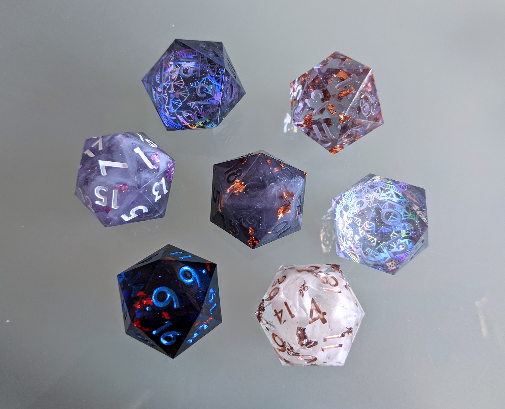

About me
My name is Lin and I make polyhedral dice for tabletop games. It was originally a casual hobby born out of my enjoyment of playing DnD and my love for collecting colorful, shiny things. I'm in the process of building inventory and setting up a small online store. My dice are produced from scratch by just me.
You can learn more about my dicemaking process here or check out my future store page here.
